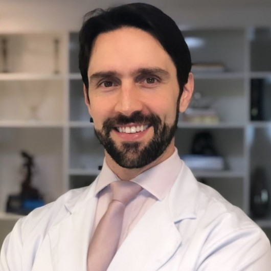
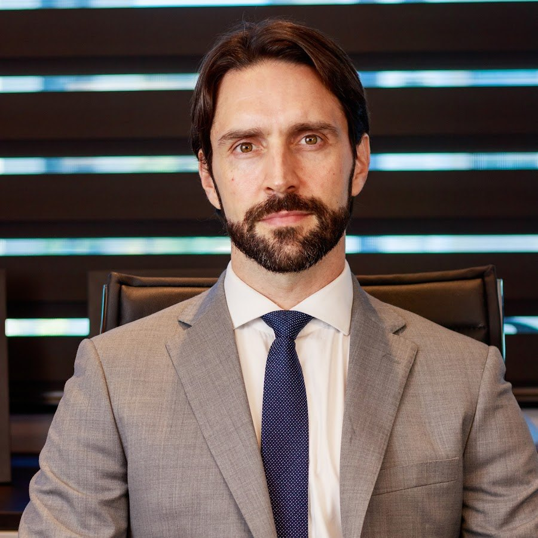

Início · Sobre mim
Tiago Boulhosa Amoedo, cirurgião plástico.
Sou cirurgião plástico (CRM-BA 18908 · RQE 11832), membro da Sociedade Brasileira de Cirurgia Plástica, com consultório no Centro Médico do Hospital da Bahia, na Pituba. Cada informação desta página tem a fonte ao lado.
Sobre mim
Nas minhas palavras
“Encontrei na Cirurgia Plástica a minha plena realização profissional. Através dela promovo a saúde em seu conceito mais tenro e completo: ‘O estado de bem estar físico, psíquico e social’ (Organização Mundial de Saúde, O.M.S.) Construo com meus pacientes uma relação focada na captura dos seus anseios, esclarecimento de suas dúvidas […]. Para promover tais mudanças associamos capacitação profissional adequada, boa relação médico – paciente e técnicas cirúrgicas individualizadas.”“Sobre mim”, publicado no meu perfil da SBCP e da Doctoralia
Nos vídeos que publico, falo do que defendo: técnica, critério e franqueza sobre riscos.
“A gente busca na cirurgia plástica saúde, bem-estar físico, mental e social.”Do meu canal no YouTube, 27 de julho de 2026 · ver o vídeo

Formação
Formação
Esta é a formação que apresentei no meu site antigo:
- GraduaçãoMedicina na Escola Bahiana de Medicina e Saúde Pública.
- Cirurgia geralSanta Casa de Misericórdia de Santos (SP).
- Cirurgia plásticaServiço de Cirurgia Plástica Dr. Ewaldo Bolivar de Souza Pinto (UNISANTA), em Santos (SP).
O CNES registra meu vínculo com a Santa Casa de Santos, e o artigo de 2012 na Revista Brasileira de Cirurgia Plástica me apresenta como “Membro aspirante em treinamento da SBCP, estagiário do Serviço de Cirurgia Plástica Dr. Ewaldo Bolivar de Souza Pinto, UNISANTA, Santos, SP”.
Trajetória
Trajetória
Desde 2013 · Hospital da Bahia
Cirurgião plástico, com vínculo registrado no CNES desde novembro de 2013.
2017–2022 · Hospital Estadual da Mulher
Cirurgião plástico do hospital, segundo o CNES.
Hoje · SBCP
Categoria “Associado (Membro Especialista)” na busca pública da Sociedade Brasileira de Cirurgia Plástica.
Hoje · consultório
Centro Médico do Hospital da Bahia, Bloco A, salas 6016 e 6017, na Pituba.

Publicação
Artigo na Revista Brasileira de Cirurgia Plástica
Daniel Melo de Azevedo; Paulo Gonçalves Junior; Juliano Pereira; Tiago Boulhosa Amoedo; Fábio Massaru Kuroyanagi; Emmanuel Francis Mallol Cotes; Ewaldo Bolivar de Souza Pinto; Osvaldo Ribeiro Saldanha.
Ler na RBCP · DOI 10.1590/s1983-51752012000100014A RBCP é a revista oficial da Sociedade Brasileira de Cirurgia Plástica. O artigo descreve a experiência do serviço em que fiz a formação em cirurgia plástica.
Videocast
The Bodycast
No THE BODYCAST COM DR. TIAGO AMOEDO, meu videocast no YouTube, converso com convidados de outras áreas sobre o que acontece em volta da cirurgia plástica. Os episódios estão aqui só como link:
- Concorrência na cirurgia plásticacom Dra. Jamile Araripe54:02
- Ginecologia x cirurgia plásticacom Dra. Tina Batalha1:47:16
- Nutrologia x cirurgia plásticacom Dr. Rusthenes Jr.1:09:57
- Cirurgia plástica é arte?com Dodô Villar57:12
- Plástica x dermatologiacom Dra. Alice Magalhães1:03:46
- Plástica x nutriçãocom Evelyn Brooke1:25:34
- Plástica x anestesiacom Dr. Italvar Neto50:45
- Plástica x maternidadecom Jessica Smetak48:03
Todos os episódios e os vídeos curtos estão no meu canal do YouTube.
Transparência
Como conferir
- Categoria de membro: busca pública da SBCP.
- Registro médico: busca de médicos do CFM.
- Vínculos com o Hospital da Bahia, o Hospital Estadual da Mulher e a Santa Casa de Santos: consulta de profissionais do CNES.
- Artigo de 2012: Revista Brasileira de Cirurgia Plástica.
- Textos entre aspas: meu canal do YouTube e o “Sobre mim” na Doctoralia.
Dúvidas frequentes
Perguntas comuns
É membro da Sociedade Brasileira de Cirurgia Plástica?
Sim. Na busca pública da SBCP, apareço na categoria “Associado (Membro Especialista)”.
Qual é o seu registro?
CRM-BA 18908 · RQE 11832, em cirurgia plástica.
O que é o The Bodycast?
É o meu videocast no YouTube, com convidados de outras especialidades, como nutrologia, nutrição, anestesia, dermatologia e ginecologia.
Agende
A cirurgia começa na primeira consulta.
Atendo com hora marcada no Centro Médico do Hospital da Bahia, salas 6016 e 6017, na Pituba. Fale com a equipe pelo WhatsApp (71) 99233-1870 e confirme o horário.